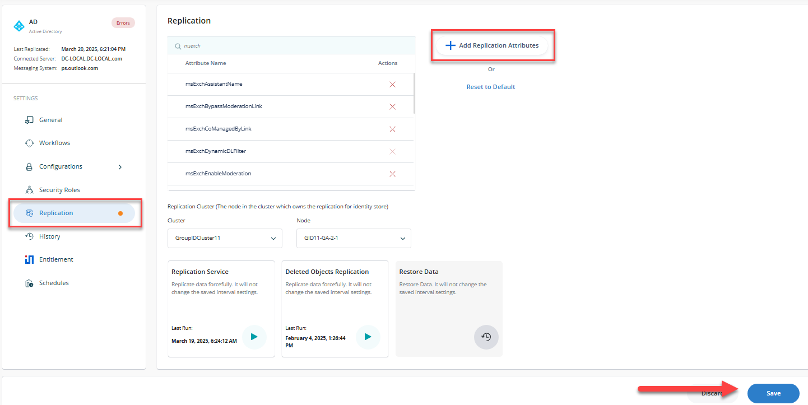
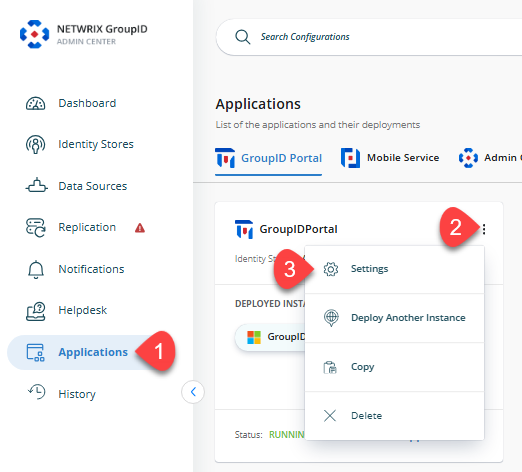
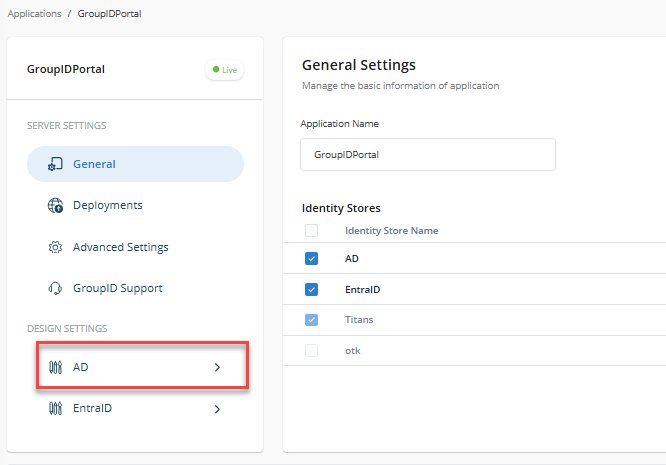
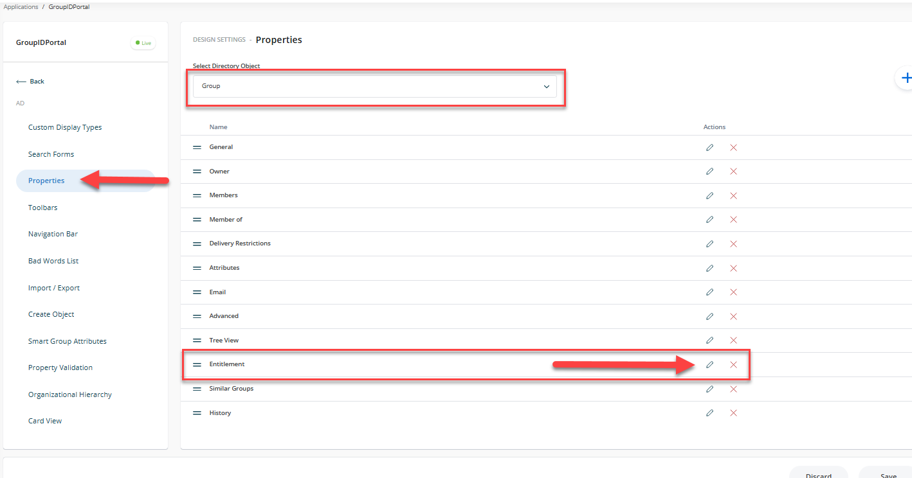
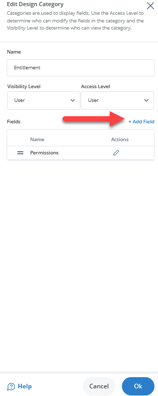
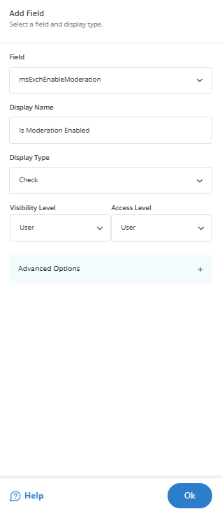
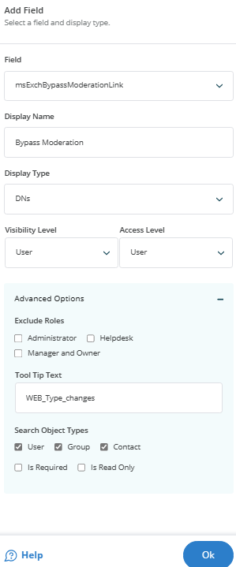
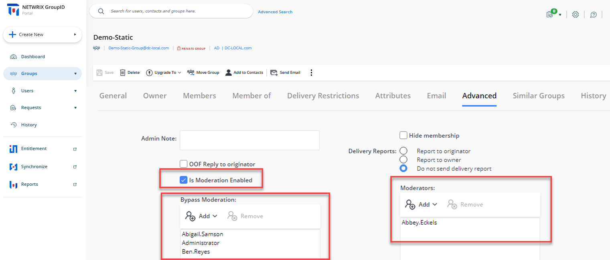

Applies To
Directory Manager 11 or above
Overview
This article outlines the process of modifying the Netwrix Directory Manager (formerly Netwrix GroupID) portal to show moderator settings for distribution lists configured in Microsoft Exchange, using specific Active Directory attributes.
The following attributes are associated with message moderation for on-premise Microsoft Exchange:
- msExchEnableModeration: Enables or disables message moderation for a distribution group. When enabled, messages sent to the group require moderator approval before delivery.
- msExchModeratedByLink: Associates a moderated recipient with a distribution list or security group whose members serve as moderators.
- msExchBypassModerationLink: Associates a moderated recipient with a distribution list or security group whose members are allowed to bypass message moderation.
By utilizing these attributes, you can create a customized view in the Directory Manager Portal to display the appropriate message approvers for distribution lists. This customization helps manage message moderation effectively within your organization's Exchange environment.
Instructions
Follow the instructions below to configure the Directory Manager Portal:
-
Open the Identity Stores tab in Directory Manager Admin Center and click Edit under the ellipses menu on the appropriate Identity Store card.
-
On the Replication tab, click Add Replication Attributes and add the required attributes.
 -
Click Settings. A new page will appear.
 -
Select the appropriate Identity Store.
 -
Under the Properties tab, select Group from the Select Directory Object list.
-
Select Advanced in the Name list and click the Pencil icon.
 -
On the Edit Design Category dialog box, click Add Field.
 -
Select mxExchEnableModeration from the Field list, enter the display name as Is Moderation Enabled and set the display type to Check.
-
Click OK and then click Add Fields again.
 -
Select mxExchModeratedByLink, enter the display name as Moderators, and set the display type to DNs.
-
Click OK and then click Add Fields again.
-
Select mxExchBypassModerationLink, enter the display name as Bypass Moderation, and set the display type to DNs.
-
Click OK and then click the Save icon at the top of the page.
 -
Launch the Directory Manager Portal. The new attributes should appear under the Groups tab under Advanced.
